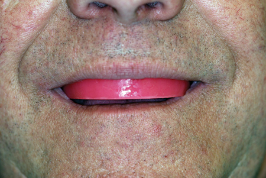
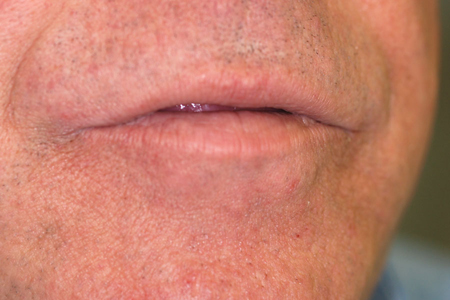
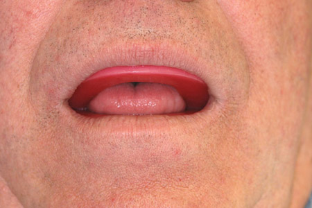
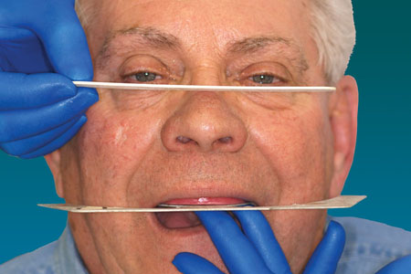
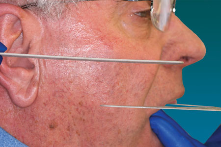
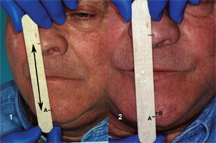
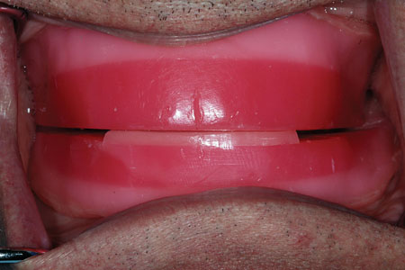
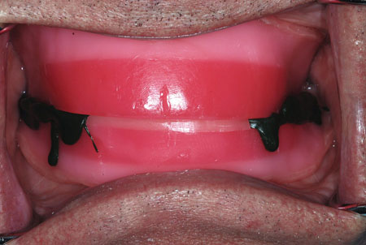

Procedure:
- Position and contour the maxillary RBOR. Using phonetic and esthetic parameters complete the proper contours for lip support, proper phonetics and length of the anterior maxillary rim. Fricative sounds, normal facial anatomy and contours should be achieved by manipulating the shape and length of the maxillary rim. Using a Fox Plane Guide, match the lateral incisal plane with an imaginary line drawn through the pupils of the eyes.(Fig 01, Fig02, Fig03)

Fig 01

Fig 02

Fig 03
- Mark the mid-line on the occlusion rim. Mark the tentative distal aspect of the canines on the rim along with the high smile line.
- After the anterior shape and length is satisfactory begin to establish the tentative occlusal plane using the ala-tragus (Camper's Plane) line as a guide to the correct angle achieved on the occlusion rim. This can be accomplished by the use of the Fox Plane Guide. (Fig 04, Fig 05)

Fig 04

Fig 05
- With the contoured maxillary RBOR in place make the tentative determination of the patient's Rest Vertical Dimension (RVD). Measurements of the facial thirds, gentle lip contact while relaxed and prolonged "mmmmmm" sound can be useful in making this determination. Record the tentative RVD with a Boley Gauge or on a disposable tongue blade by marking two points on the patients face (nose and chin) for reference. (Fig06)
- Place the mandibular rim in the patient's mouth and begin adjustments to make even contact with the maxillary rim at 2-4mm less than the recorded RVD. The posterior maxillary occlusion rim may need some adjustment to accomplish this procedure. During this analysis check the "closest speaking space" and interocclusal distance (IOD) during speech. Use "s" numbers and words along with "o" words to help relax the muscles. There should be 2-4mm of IOD at the RVD and 1-2mm "closest speaking space" during speech. The rims should contact evenly at this distance that is the Occluding Vertical Dimension (OVD). RVD-IOD=OVD (Fig06)

Fig 06
- Normally the mandibular occlusion rim will be somewhat even with the lower lip line and end one-half to two-thirds up the retromolar pad in the posterior after the OVD is determined.
- Place orientation grooves in the maxillary occlusion rim.
- Perform a facebow recording procedure. See Facebow APP or course materials for specific details.
- Remove 2mm of material from both sides of the posterior part of the mandibular occlusion rim (molar/pre-molar areas). Leave the anterior portion in contact at the OVD. Check the clearance intraorally. (Fig 07)

Fig 07
- Practice with the patient to achieve the proper centric relation position at the OVD. An inverted hand position will allow the operator to maintain stability of the RBORs. Use the other hand with the thumb against the anterior mandible and the fingers along the lower border to guide the patient into the centric relation position. Once the patient is comfortable and the position is found to be repeatable, the record can be made.
- Score the top of the inset on the posterior mandibular occlusion rim and apply a thin coat of VPS adhesive. Allow the adhesive to dry.
- Replace the RBORs in the patient's mouth and pre-position the patient in the centric relation position with about 5-7mm of space between the rims. Have an assistant place VPS registration material between the posterior portion of the rims bilaterally and complete the centric relation positioning at the OVD. Be careful not to let the contact of the anterior portion of the occlusion rim dislodge either RBOR during this procedure.
(Fig 08)

Fig 08
- After polymerization, remove the RBORs. Inspect the record for perforations and insure the RBOR did not contact each other in the posterior during procedure.
- Trim the record so the orientation grooves can be visualized and check the record intraorally for accuracy.
- Disinfect the RBORs and records.
- Articulate the mandibular cast to the maxillary cast using this record. See the articulator manual and course information for this laboratory procedure.
|